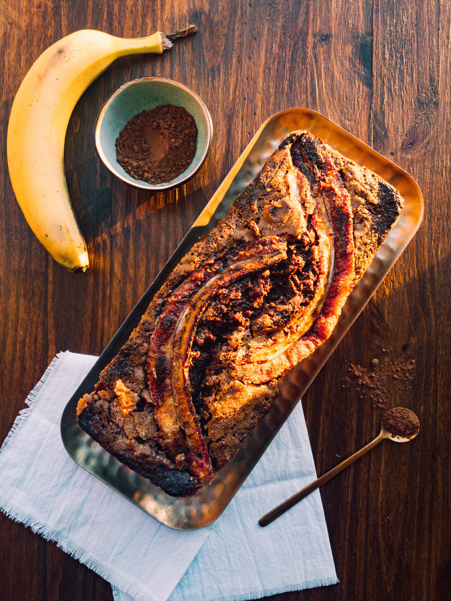
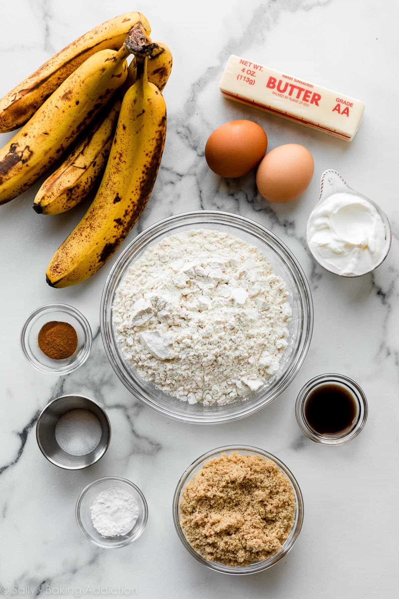
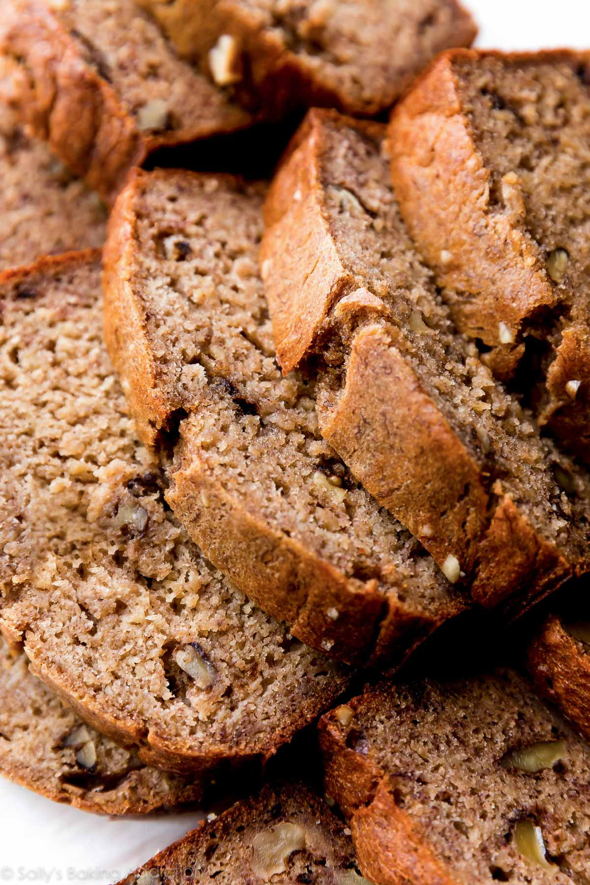
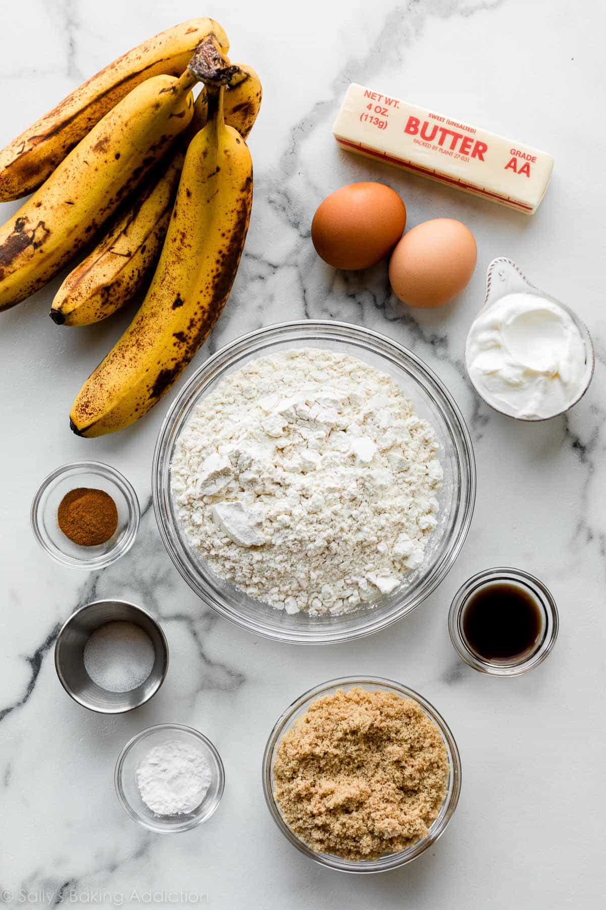
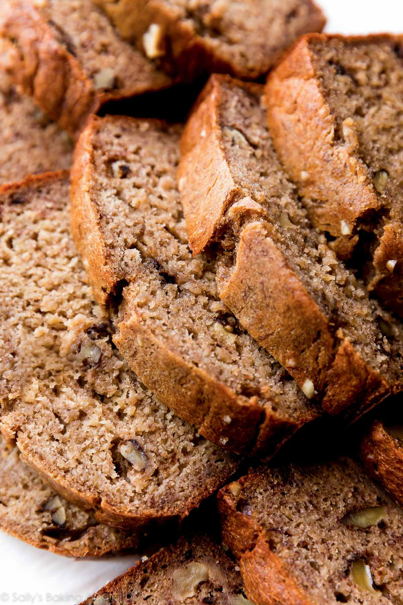
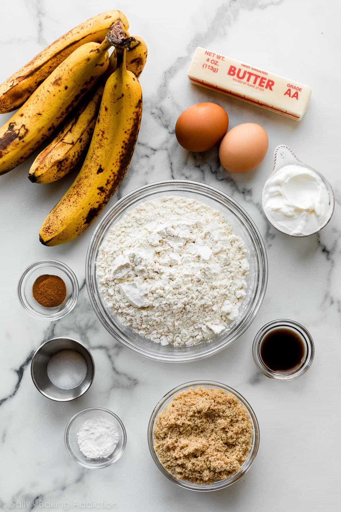
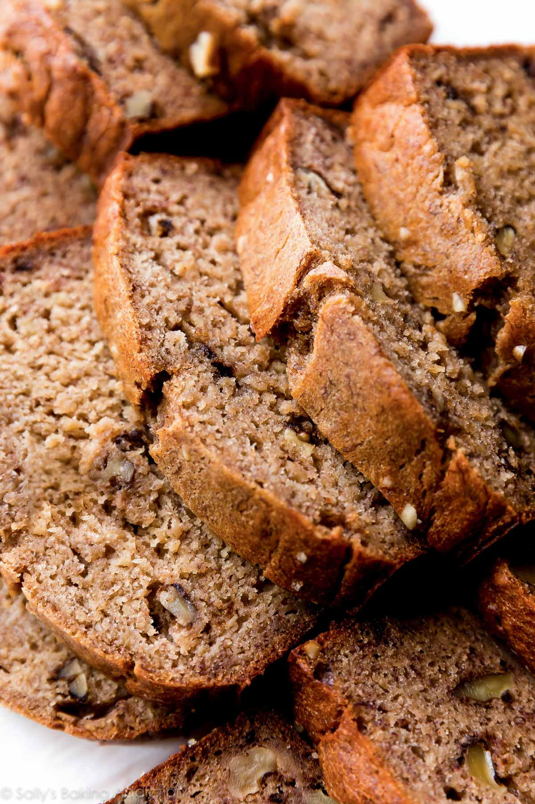

 






Recipe Websites:
- Bon Apetit: The singlemost annoying thing about recipe websites by individuals is the long essay before the ingredients and instructions. I think Bon Apetit tends to avoid that (or does it to a lesser degree). This makes for a much more enjoyable experience for me on their website. I also think their instructions are extremely detailed. Making the ingredients bold in the instructions provides a good overview for experienced cooks, but the meticulous attention to detail means that beginners can still follow the recipe.
- AllRecipes: I don't often use AllRecipes (nor do I cook that often in general), but I usually avoid this website because of how many ads and popups you're immediately bombarded with. However, once you make it past that, the actual recipe page is nicely done. There is no beginning essay, and it features a "find locally" function that could be more helpful if making recipes with more uncommon ingredients. The directions are often succinet. They lack the detail that Bon Apetit gives, but they have enough information to guide the viewer.
- Half-Baked Harvest: I think this website uses a similar template website that Sally's Baking Addiction uses, as they have pretty similar ingredients list. They give you the option to check whichever ingredients you have or don't have. I think its a great feature, from an organization standpoint. Almost all recipes give the option to print, and if you mark whatever ingrdients you have, you cna treat the recipe as a sort of grocery list (with Jupiter? I've never seen them before)
Non-Recipe Websites:
- Cala: I think it would make sense for my recipe to go with a color pallete that's muted/brown/yellow. This website uses a similar pallete to the one I imagine myself using (although theirs is maybe more vibrant than I think mine will end up being). I also like their consistency with the photography. I know that is usually expected of restaurants and their menu items, but I think the consistency provides an anchor point to the website.
- WordStone: I think this website was able to blend type beautifully, in many interesting ways. I struggle to see how their layout could translate to a recipe website, since they're not usually presented in this way, but I think there's a lot to learn from the minor typographic choices as well as the relationship between their different bodies of text.
- Somvai: This website's layout could very easily become one for a recipe website. It would be simple to place the pictures on one side and the words on the other like they do. I wonder if it would achieve the same effect, however, since their website is very monotonous and clean, whereas a recipe would be more colorful and variable. I do like the scrolling effect (although I'm unsure of whether that can be accomplished with only HTML/CSS).